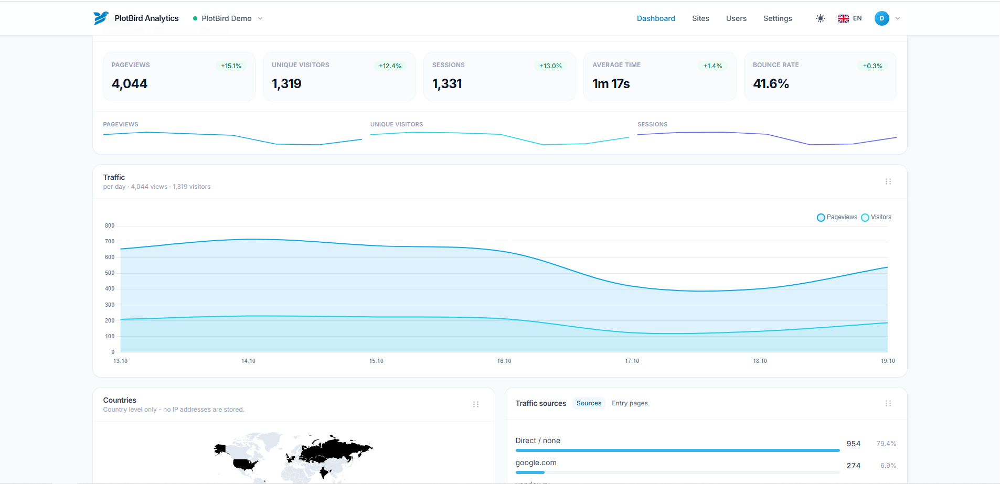
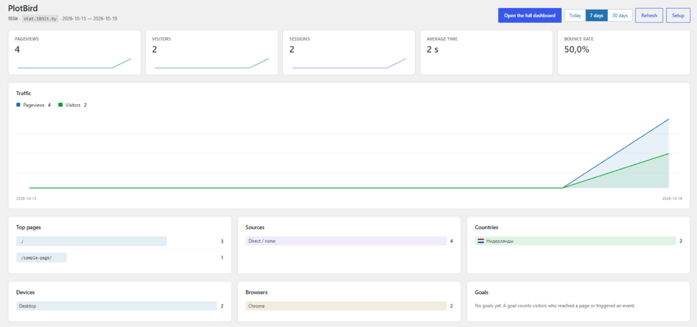

Installs itself in a browser
A seven-step wizard checks the environment, creates the tables, writes the configuration, creates the administrator and adds your first website. No terminal, no console command, no SSH anywhere.
AGPL-3.0 · self-hosted · PHP 8.0+
PlotBird is cookie-free, self-hosted analytics written in plain PHP. Upload the folder, finish the installer in your browser, paste one script tag. No Docker, no Node on the server, no SSH, no Composer.
Tracker 1.3 KB · dashboard CSS 43 KB, pre-compiled ·
MySQL 5.7+ or MariaDB 10.2+

Most self-hosted analytics assume a VPS: Plausible needs Elixir and ClickHouse, Umami needs Node, GoatCounter ships a binary. PlotBird is for the millions of sites that live on €3 shared hosting, where the only things you have are PHP, MySQL, FTP and a control panel.
A seven-step wizard checks the environment, creates the tables, writes the configuration, creates the administrator and adds your first website. No terminal, no console command, no SSH anywhere.
A visitor is a salted hash of address, user agent and date. Nothing is stored in the browser, nothing follows anybody between sites, and storing a raw address is an explicit opt-in.
1.3 KB of JavaScript, pre-compiled CSS and every library vendored locally, so the dashboard also works on a server without internet access. Schema changes arrive as SQL you apply from the settings page.
No build step, no dependencies to install, no package manager to trust.
install/ folder and you are done.
<script async defer
src="https://your-domain.example/assets/tracker.js"
data-website-id="00000000-0000-0000-0000-000000000000"></script>The installer prints this snippet with your own id already in it.
The plugin adds the tracker to public pages only, checks that the connection works, and shows the statistics inside the admin.

Administrators are not counted by default, so your own visits stay out of the reports. The plugin stores no password: statistics are read through a share link, which is read-only and can be revoked at any time.
Every tool here is good at what it was built for. The difference is where it runs.
The same idea on a different host: Plausible needs Elixir and ClickHouse, which means a VPS with Docker. PlotBird needs PHP and MySQL, which means the hosting you already pay for.
Umami runs on Node. Plenty of shared hostings do not run Node at all, and the ones that do will not keep it running for you.
Matomo is a platform: plugins, funnels, e-commerce, campaign tracking. PlotBird deliberately stays small enough to install in five minutes and stay fast on a cheap machine.
.htaccess and the nginx snippet ship untested, and the documentation says so.If you need funnels or e-commerce tracking today, Matomo is the safer choice.